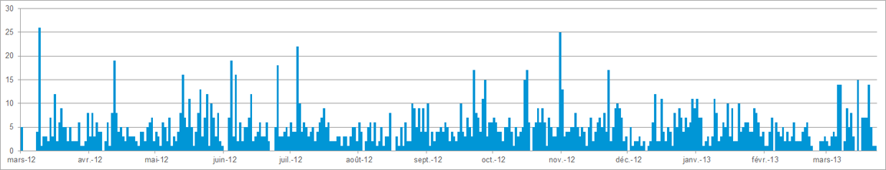

{$message}
{else}{/if}
Quelques statistiques ;-)
Nombre d'articles postés quotidiennement (remarquez qu'on a pas beaucoup de passages à vide !)

| Qui ? | Posts | Commentaires | Ratio com/post | Note moyenne obtenue | Note moyenne donnée aux autres |
|---|---|---|---|---|---|
| christophe | 752 | 1756 | 2.3 | 7.7 sur 285 posts | 8.3 sur 241 notes |
| benjamin | 269 | 968 | 3.6 | 7.9 sur 143 posts | 8.7 sur 445 notes |
| timi | 100 | 547 | 5.5 | 8.7 sur 54 posts | 7.4 sur 149 notes |
| pierre_l | 38 | 519 | 13.7 | 8.4 sur 10 posts | 7.3 sur 120 notes |
| simon | 112 | 509 | 4.5 | 8.9 sur 46 posts | 7.3 sur 146 notes |
| tipple | 180 | 431 | 2.4 | 7.9 sur 113 posts | 7.2 sur 303 notes |
| mathieu | 170 | 295 | 1.7 | 8.2 sur 63 posts | 7.5 sur 101 notes |
| peo | 77 | 232 | 3 | 8 sur 36 posts | 8.6 sur 91 notes |
| kouzkouz | 33 | 169 | 5.1 | 4.9 sur 6 posts | 10 sur 4 notes |
| audrey | 15 | 163 | 10.9 | 9.5 sur 7 posts | 8.5 sur 90 notes |
| ginette | 24 | 148 | 6.2 | 7.4 sur 10 posts | 8.1 sur 70 notes |
| maelle | 72 | 78 | 1.1 | 8.3 sur 31 posts | 9.3 sur 38 notes |
| adrien | 9 | 28 | 3.1 | 10 sur 1 post | 9.5 sur 3 notes |
| romain | 5 | 15 | 3 | 9.4 sur 4 posts | 9.6 sur 37 notes |
| nounours | 16 | 11 | 0.7 | 8.8 sur 14 posts | 9.4 sur 70 notes |
| nathalie | 1 | 10 | - | 10 | 8.6 sur 1 note |
| guillaume_c | 10 | 7 | 0.7 | 7.2 sur 2 posts | 9.7 sur 8 notes |
| faz | 7 | 1 | 0.1 | - | - |